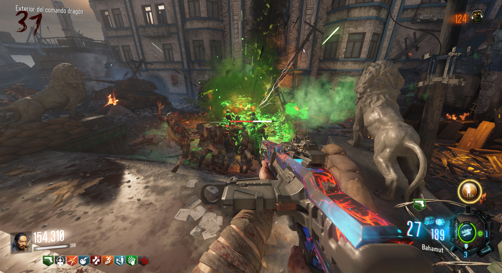
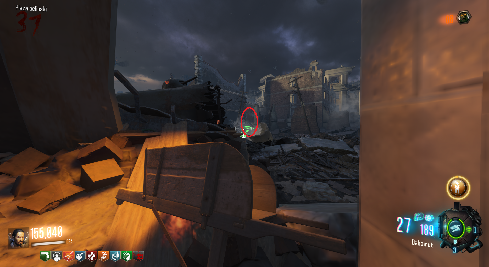
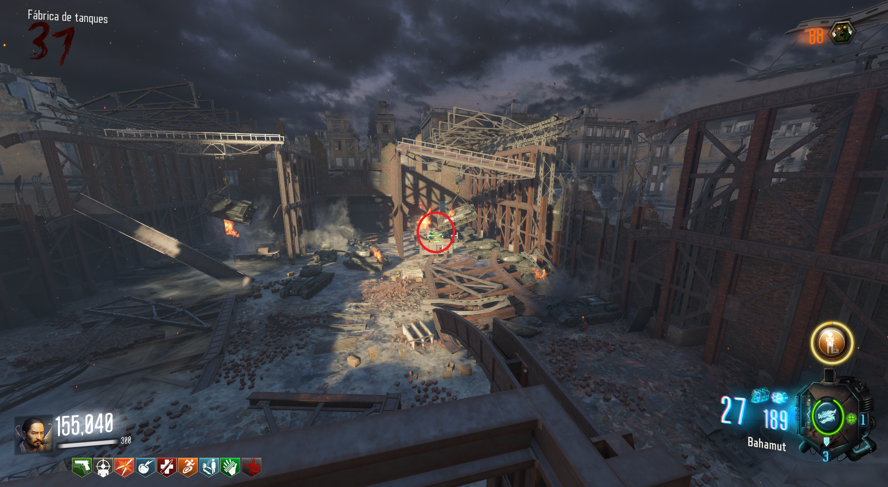
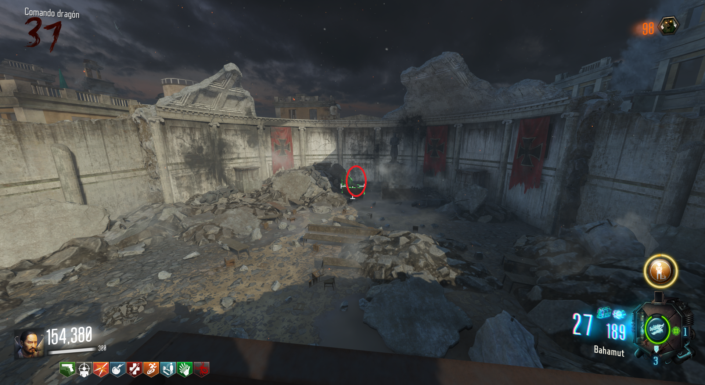
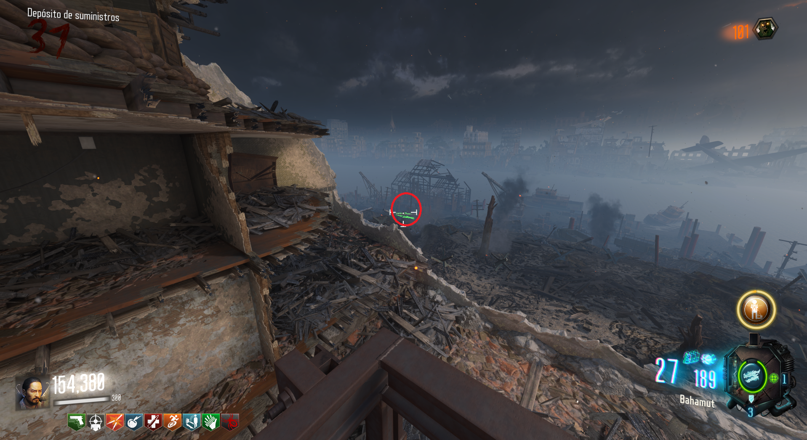
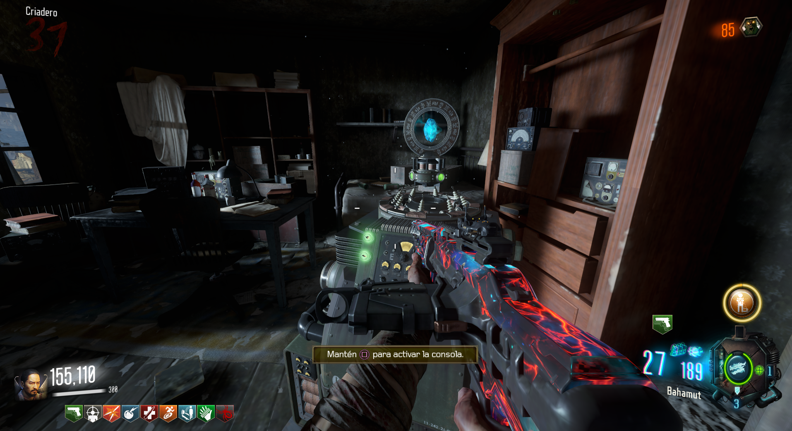
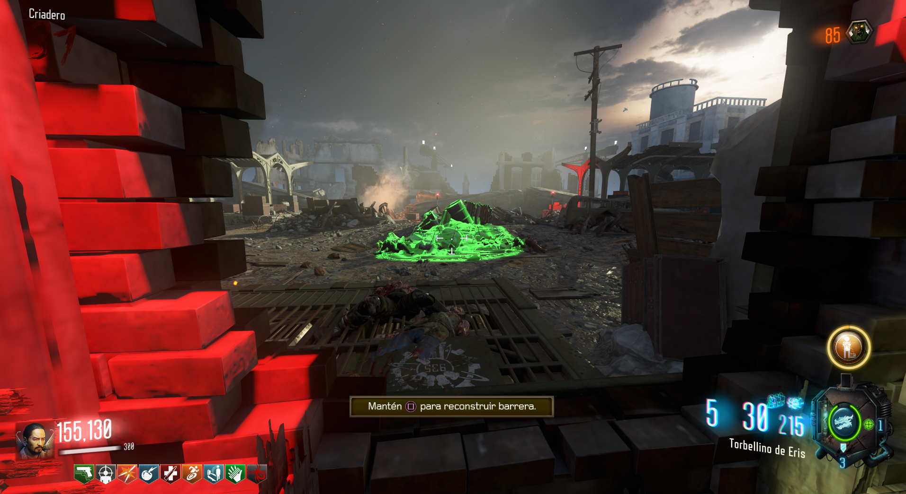
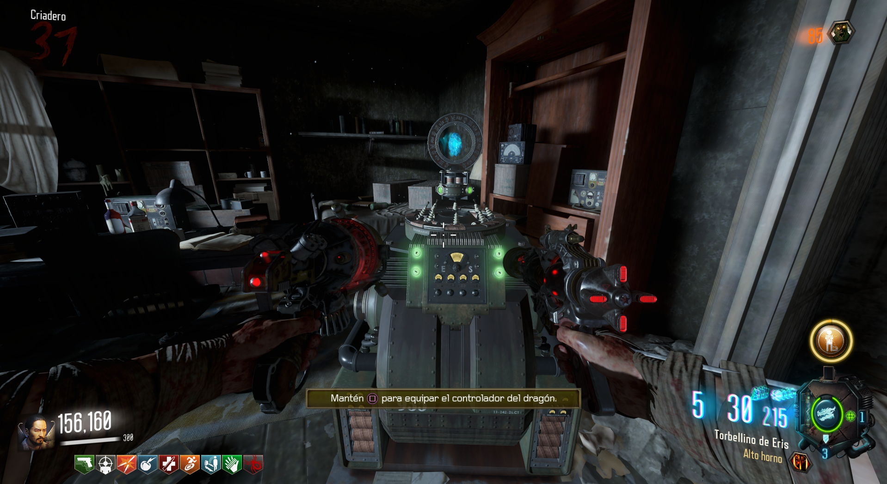

Requisitos: Tener el control de ataque dragón.
Con la mejora tendremos 3 ataque disponibles, y el daño aumentará considerablemente.
El primer paso será matar a 50 zombies con el ataque dragón.

Después tendremos que buscar una bandera roja fuera del mapa y lanzar un ataque en esa ubicación (cada jugador tendrá una bandera).
Localizaciones:




Luego de acertar el ataque, volveremos al PaP y podremos volver a activar la consola.

Al igual que en la última vez, tendremos 4 rondas, pero esta vez necesitaremos usar el ataque de mortero todo lo que podamos para que se mejore.

Si todo salió bien, podremos recoger el mortero mejorado en el cristal. Si no, volveremos a empezar las rondas.
